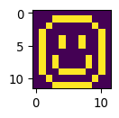
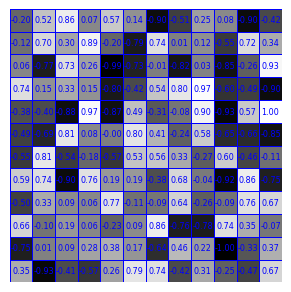
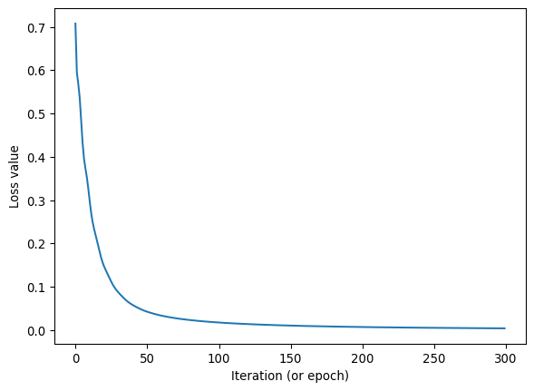
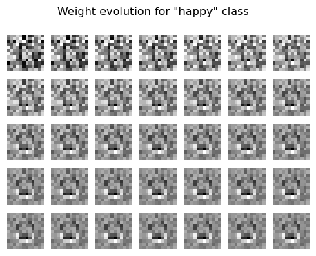
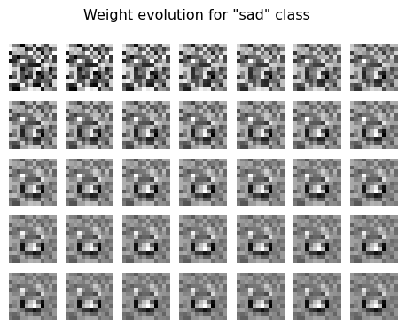
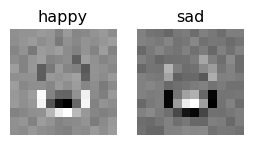
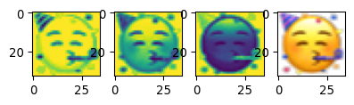
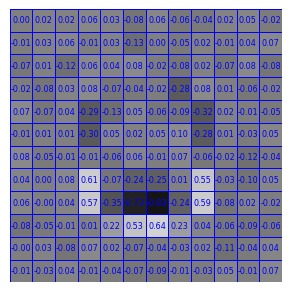
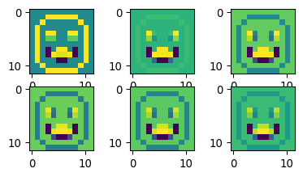

import torch
from torch import nn
from torch.utils.data import Dataset
import numpy as np
import tifffile as tiff
import matplotlib.pyplot as pltWorkshop Python Image Analysis
Martijn Wehrens, September 2025
Estimated time: 20 mins presenting + 60 mins exercises + 20 mins discussion
Chapter 6: A very basic introduction into machine learning
This notebook will probably need to be run on Google colab or the like, as laptops might not have the right architecture to run this.
Outline of this mini-workshop
- Mini lecture about Machine Learning
- /Users/m.wehrens/Documents/PRESENTATIONS/TEACHING/ML_verybasic.pptx
- Go over the questions in this notebook
- Don’t try to understand all code!
Exercise: draw 4 images
Open FIJI and create a new 12x12 8bit image. Use the paintbrush tool and color picker to draw four images. Draw 2 images depicting one thing, and two images depicting another thing. E.g. draw 2 images of an apple and two images of a pear. Only spend a few minutes on this. (You can also draw something easier, like numbers, symbols, letters, etc.)
Run some code
The code below uses pytorch to set up a very simple neural network. “Real” neural networks have a much more complicated architecture. The purpose here is to be able to follow along what’s happening in a neural network.
Understanding, but not the technical details
The code has some explanatory comments, but it takes too much time to explain fully how pytorch or similar neural network libraries (like tensorflow or keras) work. You’re welcome to try and understand the code, but don’t get lost in it, the main goal is to understand the concepts of machine learning.
# This code defines a VERY simple model for 12x12 pixels,
# meant for illustratory purposes.
class VerySimpleNN(nn.Module):
# Pytorch makes use of classes, which are a way to group
# data and functions together. A class specifies what functions
# the class provides, and what data (like parameters) it stores.
# An object can then be created to actually load data and
# call those functions.
# As an analogy, class definitions are the "blueprint",
# objects instantiated from the class are the "houses".
#
# Here, we define a class (blueprint) for our simple
# neural network.
#
# To learn more about classes, e.g. google for a tutorial on
# Python classes.
def __init__(self):
# __init__ is a standard class method, which is
# automatically called when an object is created.
#
# In this case, it defines how (the layers
# of) the network should look.
# technical; calls init of parent class
super().__init__()
# Define a flatten function, which in this case
# can flatten the input (the image) to a 144 element vector
self.flatten = nn.Flatten()
# Define a linear layer, which will
# calculate weights*pixels for 144 element input and 2 output elements
self.linear = nn.Linear(12*12, 2)
def forward(self, x):
# The forward function can be called later to actually
# generate a prediction.
# It will use the "components" we defined in __init__.
# (This is useful when the network is more complicated,
# and more complex structures or components are defined in __init__, and
# the forward function will be less complex.)
# Now actually use the flatten function to convert
# the 12x12 input to a 1d 144 long vector.
x = self.flatten(x)
# technical note:
# typically, input will be supplied in batches,
# so the input shape will be (batchsize, 12, 12)
# and the output shape will be (batchsize, 144)
# Now use the linear layer to calculate the 2 element output
logits = self.linear(x)
return logits
###
# Now test the neural network
# Instantiate the neural network (create an object from the class)
# Technical note: ".to('mps')" tells the computer to run this network
# on an Apple GPU.
simpleNN = VerySimpleNN().to('mps')
# Generate a random 12x12 image
test_data = torch.rand(1, 12, 12, device='mps')
print('test_data=',test_data)
# Generate a prediction; calling the object will automatically
# call the forward function (since this is a pytorch class)
# Alternatively, you could also call simpleNN.forward(test_data)
pred = simpleNN(test_data)
pred_numpy = pred.cpu().detach().numpy()
# Print the prediction
print('pred = \"',pred, '\" (pytorch tensor format)')
print('pred_numpy = \"',pred_numpy,'\" (numpy format)')test_data= tensor([[[9.9905e-01, 1.0443e-01, 8.6779e-01, 6.6410e-01, 2.6765e-01,
3.0579e-01, 8.3061e-01, 2.1545e-03, 9.3924e-01, 3.2814e-01,
1.2284e-01, 4.4792e-01],
[6.7325e-01, 7.2292e-01, 1.4194e-01, 9.1369e-01, 8.2602e-01,
3.8811e-01, 4.8375e-01, 3.0279e-01, 3.9723e-01, 9.4624e-01,
7.7136e-01, 4.6563e-01],
[2.0083e-02, 8.5847e-01, 6.3434e-01, 4.4390e-01, 3.5225e-01,
5.0454e-01, 7.0295e-01, 2.8191e-01, 6.9066e-01, 8.5711e-01,
5.9398e-01, 3.7165e-01],
[8.7687e-01, 5.6346e-01, 3.3366e-01, 6.1878e-01, 9.6298e-01,
4.9849e-01, 4.9843e-01, 1.5370e-01, 5.5957e-01, 3.6142e-01,
4.4155e-01, 5.9388e-01],
[9.4979e-01, 3.2256e-01, 3.0280e-01, 5.0337e-01, 3.9201e-01,
9.9419e-01, 1.6993e-01, 5.2423e-01, 1.2411e-01, 6.1835e-01,
7.0069e-01, 8.7767e-01],
[1.1036e-01, 8.1951e-01, 6.1241e-01, 8.3477e-01, 2.3271e-01,
4.5096e-01, 9.3167e-02, 6.3943e-01, 7.1112e-02, 6.9390e-02,
5.4557e-01, 5.5413e-01],
[6.7520e-04, 2.8757e-01, 9.8652e-01, 1.3540e-03, 5.5331e-01,
2.8947e-01, 7.5296e-01, 7.9390e-01, 4.6192e-01, 2.3037e-01,
9.5128e-03, 2.2951e-01],
[6.7398e-01, 5.6195e-02, 3.3444e-02, 8.7981e-01, 2.3037e-01,
9.9677e-01, 3.8786e-01, 5.7501e-01, 3.2707e-01, 5.0473e-01,
4.4552e-01, 9.7519e-01],
[1.6873e-01, 6.0940e-01, 8.6280e-01, 8.0880e-01, 7.5555e-01,
1.5525e-01, 4.0801e-01, 5.4635e-01, 1.4039e-01, 1.2429e-01,
1.4869e-01, 5.1706e-02],
[9.5982e-01, 6.5002e-01, 4.9812e-02, 6.7351e-01, 6.4761e-01,
9.1964e-01, 6.5039e-01, 1.7261e-01, 7.4254e-01, 3.6378e-01,
8.1820e-01, 7.3676e-01],
[1.4350e-01, 6.7997e-01, 6.9720e-01, 4.5635e-01, 3.3715e-01,
3.2860e-01, 2.8961e-01, 3.7464e-01, 9.7524e-01, 6.7169e-01,
7.2361e-01, 5.4394e-01],
[5.7067e-01, 7.9562e-01, 1.5230e-03, 7.4052e-01, 4.3939e-01,
5.4857e-01, 5.2375e-01, 9.4757e-01, 3.0011e-02, 4.5022e-01,
5.1870e-01, 6.9582e-01]]], device='mps:0')
pred = " tensor([[ 0.0753, -0.3882]], device='mps:0', grad_fn=<LinearBackward0>) " (pytorch tensor format)
pred_numpy = " [[ 0.07531799 -0.38824344]] " (numpy format)Remarks: Tensors
As you can see the output has the type tensor. This is an internal data structure of pytorch, which is similar to a numpy array. The reason we’re using these ‘special’ arrays is (1) that their technical setup allows for calculating the “gradient” (\(\delta\text{loss}/\delta w\)) used to update the weights \(w\) and (2) they can be put on GPUs, which can speed up calculations a lot.
Questions
- What role does \(\delta\text{loss}/\delta w\) play in neural networks?
- This questions regards the code under the heading “# Now test the neural network” above. Can you describe in your own terms what
- The input we give to the network looks like here?
- What the output of the neural network looks like?
- If we were to provide actual images to this network, do you think it would be able to generate meaningful predictions? Why would it (not)?
# Since this network is so simple, we can manually calculate it's outcome
# Now acquire the weights stored in the neural network
# And convert them from tensors to numpy
weights = simpleNN.linear.weight.detach().cpu().numpy()
bias = simpleNN.linear.bias.detach().cpu().numpy()
# bias is a constant term that's added to the weighted sum
# Also convert the test data to numpy
test_data_np = test_data.cpu().numpy().flatten()
# Perform the calculation
output_element1 = np.sum(test_data_np * weights[0]) + bias[0]
output_element2 = np.sum(test_data_np * weights[1]) + bias[1]
print(output_element1, ', ', output_element2)0.075318 , -0.38824344Question
- What does the calculation look like that is done inside the neural network, to get from the input elements, to the output elements?
Exercise: load your images
Adapt the code below to load the images you were asked to draw earlier.
# Let's load some potential input and training data
#
# Here, we'll load only the few images you just created.
#
# In reality, training sets are very large.
# For example, the MNIST dataset has 60,000 training images.
# (https://en.wikipedia.org/wiki/MNIST_database)
# Two image paths
img_happy_path = 'images/ML/smile.tif'
img_sad_path = 'images/ML/sad.tif'
img_sad2_path = 'images/ML/sad2.tif'
# Load images
img_happy = tiff.imread(img_happy_path)
img_sad = tiff.imread(img_sad_path)
img_sad2 = tiff.imread(img_sad2_path)
# Show one image
fig, ax = plt.subplots(1,1, figsize=(3/2.54, 3/2.54))
_=ax.imshow(img_happy)
Seaborn plotting (can be skipped)
# Let's use seaborn to create some more sophisticated plots
import seaborn as sns
def mw_showimg2(img, annotcolor='white',SX=8,SY=8,SF=7,VMIN=0,VMAX=255, CMAP='hot', FMT="d"):
fig, ax = plt.subplots(1,1, figsize=(SX/2.54, SY/2.54))
_ = sns.heatmap(img, annot=True,
fmt=FMT,
cmap=CMAP,
annot_kws={"size": SF, "color": annotcolor},
vmin=VMIN, vmax=VMAX,
linewidths=.5, linecolor=annotcolor,
ax=ax)
ax.axis('off')
ax.collections[0].colorbar.remove()
plt.tight_layout()
# Plot the images
mw_showimg2(img_happy, annotcolor='blue')
mw_showimg2(img_sad2, annotcolor='blue')
# Plot some made-up weights
img_randomweights = np.random.uniform(-1, 1, (12, 12))
mw_showimg2(img_randomweights, annotcolor='blue', SF=6,VMIN=-1,VMAX=1.0, FMT=".2f", CMAP='gray')
# Plot some made-up output
mw_showimg2(np.array([[13,-4]]), annotcolor='black', SY=4, SF=32,VMIN=-14,VMAX=14,CMAP='hot')# gray



Math (can be skipped)
For a prediction y_j, where j is referring to the categories that need predicting (e.g. \(y_1\) high means a “happy” emoji, and a high \(y_2\) value indicates the emoji is likely “sad”), \(y_j\) values can be calculated from the \(i\text{th}\) image pixel \(x_i\) as follows (with \(w_{i,j}\) being the weights):
\(\huge y_j = \sum_{i} w_{i,j} * x_i\)
Defining a data loader
To train a model, pytorch needs to be able to quickly look at a load of data efficiently. In the pytorch workflow, a data class is defined, such that training data can be stored in tensor format, and can be supplied easily to the training algorithm later.
class Data_HappySad(Dataset):
# Again, we use a class, see above for an explanation.
# (Remember the blueprint/house analogy.)
#
# This class is based on the pytorch "Dataset" class, defined
# in the pytorch library. Data_HappySad is the name we
# give to this class. Hence the notation "Data_HappySad(Dataset)".
def __init__(self, targetdevice="mps"):
# Technical: tell the class how to store the data (e.g. on CPU or GPU)
self.targetdevice = targetdevice
# Data can be handled in many ways.
# Here, we'll store some data in the object directly.
# This can be done by the "self." command, which refers
# to the to-be-created object itself.
#
# The data needs to be converted to tensor for later use
# We'll use the images loaded earlier, and store 3 images here
self.data = torch.tensor([img_happy, img_sad, img_sad2],
dtype=torch.float32)
# Now, we supply also the true labels that need to be learned
self.label = torch.tensor([0 , 1, 1],
dtype=torch.long)
# Technical: normalize the images
self.data = self.data / 255.0
def __len__(self):
# Function required by pytorch; tells how many samples are in the dataset
return len(self.data)
def __getitem__(self, idx):
# Function required by pytorch; tells how to get a specific item
return self.data[idx].to(self.targetdevice), self.label[idx].to(self.targetdevice)# Show an image from the dataloader
# Create an object from the class
data_happysad = Data_HappySad()
# We can extract a sample and annotation from that class
# (This will later be done automatically in the training loop)
img, label = data_happysad[0]
# For now, let's convert it to the numpy format for illustration
# purposes
img_np = img.cpu().numpy()
# Plot it
mw_showimg2(img_np, annotcolor='blue', VMIN=0, VMAX=1.0, FMT=".2f", SX=5, SY=5, SF=4)/var/folders/8w/2thz_cgn3xn13rhrxb2dvb5w0000gn/T/ipykernel_69926/2484028174.py:21: UserWarning:
Creating a tensor from a list of numpy.ndarrays is extremely slow. Please consider converting the list to a single numpy.ndarray with numpy.array() before converting to a tensor. (Triggered internally at /Users/runner/miniforge3/conda-bld/libtorch_1741947704867/work/torch/csrc/utils/tensor_new.cpp:257.)

Exercise
- Edit the code above, specifically the subfunction
__init__, such that it will load the images you created earlier at the start of this notebook. - Execute the code in the cell directly above, to check if you can make it show your own image.
- This code will show the first image in your dataset, can you also make it show the 2nd and 3rd image?
Dataloader
We’re now getting close to actually training this model. We’ll need to define a dataloader. In more advanced neural network setups, the DataLoader provides convenient functionalities like shuffling the data, or loading it in parallel from disk. Here, we’ll just use it to be able to loop over the data easily, and provide the data in batches of three images.
We’ll also initialize the model itself (create an object from the class VerySimpleNN defined earlier).
# initialize the dataset and dataloader objects
my_data_happysad = Data_HappySad()
my_data_happysad_loader = torch.utils.data.DataLoader(my_data_happysad,
batch_size=3, shuffle=False)
# initialize the model
my_simple_model = VerySimpleNN().to('mps') # Let's check the data object works as expected
my_data_happysad.__getitem__(0)(tensor([[0., 0., 0., 0., 0., 0., 0., 0., 0., 0., 0., 0.],
[0., 0., 0., 1., 1., 1., 1., 1., 1., 0., 0., 0.],
[0., 0., 1., 0., 0., 0., 0., 0., 0., 1., 0., 0.],
[0., 1., 0., 0., 0., 0., 0., 0., 0., 0., 1., 0.],
[0., 1., 0., 0., 1., 0., 0., 1., 0., 0., 1., 0.],
[0., 1., 0., 0., 1., 0., 0., 1., 0., 0., 1., 0.],
[0., 1., 0., 0., 0., 0., 0., 0., 0., 0., 1., 0.],
[0., 1., 0., 1., 0., 0., 0., 0., 1., 0., 1., 0.],
[0., 1., 0., 1., 0., 0., 0., 0., 1., 0., 1., 0.],
[0., 1., 0., 0., 1., 1., 1., 1., 0., 0., 1., 0.],
[0., 0., 1., 0., 0., 0., 0., 0., 0., 1., 0., 0.],
[0., 0., 0., 1., 1., 1., 1., 1., 1., 0., 0., 0.]], device='mps:0'),
tensor(0, device='mps:0'))Question
- The amount of classes and library functions used at this point might be a bit overwhelming. Can you draw a cartoon that depicts the fundamental aspects of the workflow (or otherwise recreate an overview of it)?
The actual training
Now we need to train the model by presenting it a picture, calculating the prediction (which might be completely off initially), determine which weight adjustments would improve the prediction (using the loss function), and update the weights accordingly. And repeat that multiple times.
Training a “real” neural network might take presenting the model with many images, for many iterations, and might take hours or days.
Here, our extremely simple model will be trained swiftly.
# Create the training loop
# Define a loss function
# This function is defined such that it will have a high value
# if there is a large discrepancy between the predicted and true labels.
# Our aim is to minimize the observed loss during the training.
loss_fn = torch.nn.CrossEntropyLoss()
# Later, we'll determine in which directions to adjust the weights
# (called the gradient), that correspond to a reduction in the loss,
# the optimizer will be used to update (optimize) the weights accordingly.
optimizer = torch.optim.Adam(my_simple_model.parameters(), lr=.01)
# technical; set model to training mode
my_simple_model.train()
# For illustratory purposes, we'll track what happens with the
# gradients and weights during the training. In a more extensive
# model, this isn't possible, as this will be too much data.
gradient_list = [] # only for illustratory purposes
weight_list = [] # only for illustratory purposes
loss_list = []
# Now train for 300 iterations (called epochs when 1 iteration covers all data)
for epoch_idx in range(300):
# This loop is a bit redundant here, since we have only 3 images,
# in a usual scenario, e.g. with 60.000 images, you would loop
# over those images in multiple batches. Here, we'll only
# have 1 batch, containing three images, so this loop will
# just iterate once.
for b_idx, (X,y) in enumerate(my_data_happysad_loader):
# X will contain a batch of images
# y will contain the corresponding labels
# For illustrative purposes, we'll track the weights in the model
# This isn't part of a usual training loop.
weights = my_simple_model.linear.weight.detach().cpu().numpy()
weight_list.append(weights)
# Now determine the prediction for X based on current weights
# (Note: the weights are stored inside the model object)
# (Note: the model is programmed such that it will predict
# for multiple images at once.)
pred = my_simple_model(X)
# Now we'll calculate the loss, or the discrepancy between
# the predicted and true labels
loss = loss_fn(pred, y)
# And based on that calculation, we'll determine the gradients
# (ie directions in which to adjust the weights to reduce the loss)
loss.backward()
# For illustrative purposes, we'll track the gradients
# This wouldn't be done in a usual training loop.
gradients = my_simple_model.linear.weight.grad.detach().cpu().numpy()
gradient_list.append(gradients)
# Similarly, also save the loss, this is actually also sometimes
# monitored during "real" training scenarios.
loss_list.append(loss.item())
# Then we use the optimizer to apply the gradients
optimizer.step()
# And we reset them before the next iteration
optimizer.zero_grad()
# Print some information to see what's going on
print('epoch =', epoch_idx, 'batch =',b_idx,', loss = ', loss.item())#, 'X.shape=', X.shape)epoch = 0 batch = 0 , loss = 0.7076053619384766
epoch = 1 batch = 0 , loss = 0.5945865511894226
epoch = 2 batch = 0 , loss = 0.5677168965339661
epoch = 3 batch = 0 , loss = 0.5356113910675049
epoch = 4 batch = 0 , loss = 0.4835260808467865
epoch = 5 batch = 0 , loss = 0.4316984713077545
epoch = 6 batch = 0 , loss = 0.3950776159763336
epoch = 7 batch = 0 , loss = 0.37260618805885315
epoch = 8 batch = 0 , loss = 0.3518429100513458
epoch = 9 batch = 0 , loss = 0.3254968225955963
epoch = 10 batch = 0 , loss = 0.2962389886379242
epoch = 11 batch = 0 , loss = 0.2697352468967438
epoch = 12 batch = 0 , loss = 0.2490600347518921
epoch = 13 batch = 0 , loss = 0.2334994226694107
epoch = 14 batch = 0 , loss = 0.22027675807476044
epoch = 15 batch = 0 , loss = 0.2070031613111496
epoch = 16 batch = 0 , loss = 0.19298601150512695
epoch = 17 batch = 0 , loss = 0.1789882332086563
epoch = 18 batch = 0 , loss = 0.16621960699558258
epoch = 19 batch = 0 , loss = 0.15543906390666962
epoch = 20 batch = 0 , loss = 0.14660677313804626
epoch = 21 batch = 0 , loss = 0.13908565044403076
epoch = 22 batch = 0 , loss = 0.1321100890636444
epoch = 23 batch = 0 , loss = 0.12518610060214996
epoch = 24 batch = 0 , loss = 0.1182294487953186
epoch = 25 batch = 0 , loss = 0.11145740747451782
epoch = 26 batch = 0 , loss = 0.10517320781946182
epoch = 27 batch = 0 , loss = 0.09958338737487793
epoch = 28 batch = 0 , loss = 0.09471824020147324
epoch = 29 batch = 0 , loss = 0.09045496582984924
epoch = 30 batch = 0 , loss = 0.08659803122282028
epoch = 31 batch = 0 , loss = 0.08296670764684677
epoch = 32 batch = 0 , loss = 0.07945216447114944
epoch = 33 batch = 0 , loss = 0.07603039592504501
epoch = 34 batch = 0 , loss = 0.07273969054222107
epoch = 35 batch = 0 , loss = 0.06964169442653656
epoch = 36 batch = 0 , loss = 0.06678613275289536
epoch = 37 batch = 0 , loss = 0.06419024616479874
epoch = 38 batch = 0 , loss = 0.06183655932545662
epoch = 39 batch = 0 , loss = 0.05968325212597847
epoch = 40 batch = 0 , loss = 0.057680290192365646
epoch = 41 batch = 0 , loss = 0.055784206837415695
epoch = 42 batch = 0 , loss = 0.05396683141589165
epoch = 43 batch = 0 , loss = 0.052217502146959305
epoch = 44 batch = 0 , loss = 0.05053910240530968
epoch = 45 batch = 0 , loss = 0.048941317945718765
epoch = 46 batch = 0 , loss = 0.04743405804038048
epoch = 47 batch = 0 , loss = 0.046022381633520126
epoch = 48 batch = 0 , loss = 0.044704657047986984
epoch = 49 batch = 0 , loss = 0.043473292142152786
epoch = 50 batch = 0 , loss = 0.04231643304228783
epoch = 51 batch = 0 , loss = 0.04122143238782883
epoch = 52 batch = 0 , loss = 0.04017725586891174
epoch = 53 batch = 0 , loss = 0.03917579725384712
epoch = 54 batch = 0 , loss = 0.03821246698498726
epoch = 55 batch = 0 , loss = 0.03728576377034187
epoch = 56 batch = 0 , loss = 0.03639618679881096
epoch = 57 batch = 0 , loss = 0.035544637590646744
epoch = 58 batch = 0 , loss = 0.03473183140158653
epoch = 59 batch = 0 , loss = 0.03395739570260048
epoch = 60 batch = 0 , loss = 0.03321962431073189
epoch = 61 batch = 0 , loss = 0.03251579776406288
epoch = 62 batch = 0 , loss = 0.03184271976351738
epoch = 63 batch = 0 , loss = 0.031196916475892067
epoch = 64 batch = 0 , loss = 0.030575422570109367
epoch = 65 batch = 0 , loss = 0.029975758865475655
epoch = 66 batch = 0 , loss = 0.02939627133309841
epoch = 67 batch = 0 , loss = 0.028835922479629517
epoch = 68 batch = 0 , loss = 0.02829413115978241
epoch = 69 batch = 0 , loss = 0.027770599350333214
epoch = 70 batch = 0 , loss = 0.027264997363090515
epoch = 71 batch = 0 , loss = 0.026776961982250214
epoch = 72 batch = 0 , loss = 0.026305899024009705
epoch = 73 batch = 0 , loss = 0.02585102617740631
epoch = 74 batch = 0 , loss = 0.025411320850253105
epoch = 75 batch = 0 , loss = 0.024985915049910545
epoch = 76 batch = 0 , loss = 0.024573737755417824
epoch = 77 batch = 0 , loss = 0.02417382411658764
epoch = 78 batch = 0 , loss = 0.023785501718521118
epoch = 79 batch = 0 , loss = 0.023408090695738792
epoch = 80 batch = 0 , loss = 0.02304106019437313
epoch = 81 batch = 0 , loss = 0.022684140130877495
epoch = 82 batch = 0 , loss = 0.022336864843964577
epoch = 83 batch = 0 , loss = 0.021999115124344826
epoch = 84 batch = 0 , loss = 0.021670466288924217
epoch = 85 batch = 0 , loss = 0.021350691094994545
epoch = 86 batch = 0 , loss = 0.021039480343461037
epoch = 87 batch = 0 , loss = 0.020736493170261383
epoch = 88 batch = 0 , loss = 0.020441310480237007
epoch = 89 batch = 0 , loss = 0.020153634250164032
epoch = 90 batch = 0 , loss = 0.01987304724752903
epoch = 91 batch = 0 , loss = 0.01959928870201111
epoch = 92 batch = 0 , loss = 0.01933206059038639
epoch = 93 batch = 0 , loss = 0.019071100279688835
epoch = 94 batch = 0 , loss = 0.018816186115145683
epoch = 95 batch = 0 , loss = 0.018567094579339027
epoch = 96 batch = 0 , loss = 0.018323680385947227
epoch = 97 batch = 0 , loss = 0.018085680902004242
epoch = 98 batch = 0 , loss = 0.017853064462542534
epoch = 99 batch = 0 , loss = 0.017625609412789345
epoch = 100 batch = 0 , loss = 0.017403123900294304
epoch = 101 batch = 0 , loss = 0.01718554086983204
epoch = 102 batch = 0 , loss = 0.01697259396314621
epoch = 103 batch = 0 , loss = 0.016764136031270027
epoch = 104 batch = 0 , loss = 0.016560127958655357
epoch = 105 batch = 0 , loss = 0.01636030524969101
epoch = 106 batch = 0 , loss = 0.016164517030119896
epoch = 107 batch = 0 , loss = 0.015972763299942017
epoch = 108 batch = 0 , loss = 0.015784814953804016
epoch = 109 batch = 0 , loss = 0.015600595623254776
epoch = 110 batch = 0 , loss = 0.015419990755617619
epoch = 111 batch = 0 , loss = 0.015242884866893291
epoch = 112 batch = 0 , loss = 0.015069241635501385
epoch = 113 batch = 0 , loss = 0.014898906461894512
epoch = 114 batch = 0 , loss = 0.014731761999428272
epoch = 115 batch = 0 , loss = 0.014567811973392963
epoch = 116 batch = 0 , loss = 0.014406900852918625
epoch = 117 batch = 0 , loss = 0.014249070547521114
epoch = 118 batch = 0 , loss = 0.014094047248363495
epoch = 119 batch = 0 , loss = 0.013941836543381214
epoch = 120 batch = 0 , loss = 0.01379239559173584
epoch = 121 batch = 0 , loss = 0.01364565547555685
epoch = 122 batch = 0 , loss = 0.013501455076038837
epoch = 123 batch = 0 , loss = 0.013359878212213516
epoch = 124 batch = 0 , loss = 0.013220730237662792
epoch = 125 batch = 0 , loss = 0.01308401208370924
epoch = 126 batch = 0 , loss = 0.012949608266353607
epoch = 127 batch = 0 , loss = 0.012817523442208767
epoch = 128 batch = 0 , loss = 0.012687638401985168
epoch = 129 batch = 0 , loss = 0.01255999505519867
epoch = 130 batch = 0 , loss = 0.012434477917850018
epoch = 131 batch = 0 , loss = 0.01231097150593996
epoch = 132 batch = 0 , loss = 0.012189592234790325
epoch = 133 batch = 0 , loss = 0.012070187367498875
epoch = 134 batch = 0 , loss = 0.011952679604291916
epoch = 135 batch = 0 , loss = 0.011837068013846874
epoch = 136 batch = 0 , loss = 0.011723355390131474
epoch = 137 batch = 0 , loss = 0.011611384339630604
epoch = 138 batch = 0 , loss = 0.011501158587634563
epoch = 139 batch = 0 , loss = 0.011392754502594471
epoch = 140 batch = 0 , loss = 0.01128601748496294
epoch = 141 batch = 0 , loss = 0.011180910281836987
epoch = 142 batch = 0 , loss = 0.01107743103057146
epoch = 143 batch = 0 , loss = 0.01097550243139267
epoch = 144 batch = 0 , loss = 0.010875165462493896
epoch = 145 batch = 0 , loss = 0.010776340961456299
epoch = 146 batch = 0 , loss = 0.010678992606699467
epoch = 147 batch = 0 , loss = 0.010583080351352692
epoch = 148 batch = 0 , loss = 0.010488604195415974
epoch = 149 batch = 0 , loss = 0.01039548683911562
epoch = 150 batch = 0 , loss = 0.010303768329322338
epoch = 151 batch = 0 , loss = 0.010213370434939861
epoch = 152 batch = 0 , loss = 0.010124254040420055
epoch = 153 batch = 0 , loss = 0.010036458261311054
epoch = 154 batch = 0 , loss = 0.009949907660484314
epoch = 155 batch = 0 , loss = 0.009864561259746552
epoch = 156 batch = 0 , loss = 0.00978046003729105
epoch = 157 batch = 0 , loss = 0.009697484783828259
epoch = 158 batch = 0 , loss = 0.009615677408874035
epoch = 159 batch = 0 , loss = 0.009535036981105804
epoch = 160 batch = 0 , loss = 0.009455525316298008
epoch = 161 batch = 0 , loss = 0.009377064183354378
epoch = 162 batch = 0 , loss = 0.009299692697823048
epoch = 163 batch = 0 , loss = 0.009223333559930325
epoch = 164 batch = 0 , loss = 0.00914806593209505
epoch = 165 batch = 0 , loss = 0.009073770605027676
epoch = 166 batch = 0 , loss = 0.009000449441373348
epoch = 167 batch = 0 , loss = 0.008928141556680202
epoch = 168 batch = 0 , loss = 0.00885676871985197
epoch = 169 batch = 0 , loss = 0.008786330930888653
epoch = 170 batch = 0 , loss = 0.008716829121112823
epoch = 171 batch = 0 , loss = 0.008648225106298923
epoch = 172 batch = 0 , loss = 0.008580476976931095
epoch = 173 batch = 0 , loss = 0.008513587526977062
epoch = 174 batch = 0 , loss = 0.008447674103081226
epoch = 175 batch = 0 , loss = 0.00838250108063221
epoch = 176 batch = 0 , loss = 0.008318147622048855
epoch = 177 batch = 0 , loss = 0.008254612796008587
epoch = 178 batch = 0 , loss = 0.008191858418285847
epoch = 179 batch = 0 , loss = 0.008129924535751343
epoch = 180 batch = 0 , loss = 0.008068771101534367
epoch = 181 batch = 0 , loss = 0.008008359931409359
epoch = 182 batch = 0 , loss = 0.007948611862957478
epoch = 183 batch = 0 , loss = 0.007889684289693832
epoch = 184 batch = 0 , loss = 0.007831459864974022
epoch = 185 batch = 0 , loss = 0.007773938123136759
epoch = 186 batch = 0 , loss = 0.0077170804142951965
epoch = 187 batch = 0 , loss = 0.0076609267853200436
epoch = 188 batch = 0 , loss = 0.007605475839227438
epoch = 189 batch = 0 , loss = 0.0075506106950342655
epoch = 190 batch = 0 , loss = 0.0074964105151593685
epoch = 191 batch = 0 , loss = 0.00744287483394146
epoch = 192 batch = 0 , loss = 0.007389965001493692
epoch = 193 batch = 0 , loss = 0.007337640505284071
epoch = 194 batch = 0 , loss = 0.007285942789167166
epoch = 195 batch = 0 , loss = 0.007234830409288406
epoch = 196 batch = 0 , loss = 0.0071843452751636505
epoch = 197 batch = 0 , loss = 0.007134407293051481
epoch = 198 batch = 0 , loss = 0.007085016462951899
epoch = 199 batch = 0 , loss = 0.007036212831735611
epoch = 200 batch = 0 , loss = 0.006987918168306351
epoch = 201 batch = 0 , loss = 0.006940210238099098
epoch = 202 batch = 0 , loss = 0.00689304992556572
epoch = 203 batch = 0 , loss = 0.0068463594652712345
epoch = 204 batch = 0 , loss = 0.006800217088311911
epoch = 205 batch = 0 , loss = 0.006754584610462189
epoch = 206 batch = 0 , loss = 0.0067094601690769196
epoch = 207 batch = 0 , loss = 0.006664805114269257
epoch = 208 batch = 0 , loss = 0.006620659958571196
epoch = 209 batch = 0 , loss = 0.006576985120773315
epoch = 210 batch = 0 , loss = 0.00653374008834362
epoch = 211 batch = 0 , loss = 0.006491004955023527
epoch = 212 batch = 0 , loss = 0.0064487396739423275
epoch = 213 batch = 0 , loss = 0.006406905595213175
epoch = 214 batch = 0 , loss = 0.006365463137626648
epoch = 215 batch = 0 , loss = 0.0063245296478271484
epoch = 216 batch = 0 , loss = 0.006283989641815424
epoch = 217 batch = 0 , loss = 0.0062438794411718845
epoch = 218 batch = 0 , loss = 0.006204240024089813
epoch = 219 batch = 0 , loss = 0.006164953112602234
epoch = 220 batch = 0 , loss = 0.00612605782225728
epoch = 221 batch = 0 , loss = 0.006087634712457657
epoch = 222 batch = 0 , loss = 0.0060495235957205296
epoch = 223 batch = 0 , loss = 0.006011845078319311
epoch = 224 batch = 0 , loss = 0.00597459776327014
epoch = 225 batch = 0 , loss = 0.005937623325735331
epoch = 226 batch = 0 , loss = 0.005901122000068426
epoch = 227 batch = 0 , loss = 0.005864893551915884
epoch = 228 batch = 0 , loss = 0.0058290972374379635
epoch = 229 batch = 0 , loss = 0.005793654825538397
epoch = 230 batch = 0 , loss = 0.005758486222475767
epoch = 231 batch = 0 , loss = 0.005723748356103897
epoch = 232 batch = 0 , loss = 0.005689286161214113
epoch = 233 batch = 0 , loss = 0.005655177403241396
epoch = 234 batch = 0 , loss = 0.005621460732072592
epoch = 235 batch = 0 , loss = 0.005588018801063299
epoch = 236 batch = 0 , loss = 0.0055549307726323605
epoch = 237 batch = 0 , loss = 0.005522195249795914
epoch = 238 batch = 0 , loss = 0.005489695817232132
epoch = 239 batch = 0 , loss = 0.005457549821585417
epoch = 240 batch = 0 , loss = 0.00542571721598506
epoch = 241 batch = 0 , loss = 0.005394159350544214
epoch = 242 batch = 0 , loss = 0.005362877156585455
epoch = 243 batch = 0 , loss = 0.005331948399543762
epoch = 244 batch = 0 , loss = 0.005301254335790873
epoch = 245 batch = 0 , loss = 0.00527087552472949
epoch = 246 batch = 0 , loss = 0.0052407714538276196
epoch = 247 batch = 0 , loss = 0.005210982169955969
epoch = 248 batch = 0 , loss = 0.005181467160582542
epoch = 249 batch = 0 , loss = 0.005152187775820494
epoch = 250 batch = 0 , loss = 0.005123183596879244
epoch = 251 batch = 0 , loss = 0.005094454623758793
epoch = 252 batch = 0 , loss = 0.005066040437668562
epoch = 253 batch = 0 , loss = 0.0050378222949802876
epoch = 254 batch = 0 , loss = 0.005009839776903391
epoch = 255 batch = 0 , loss = 0.004982171580195427
epoch = 256 batch = 0 , loss = 0.004954699892550707
epoch = 257 batch = 0 , loss = 0.00492750434204936
epoch = 258 batch = 0 , loss = 0.004900504369288683
epoch = 259 batch = 0 , loss = 0.004873819183558226
epoch = 260 batch = 0 , loss = 0.0048473309725522995
epoch = 261 batch = 0 , loss = 0.004821078386157751
epoch = 262 batch = 0 , loss = 0.00479506142437458
epoch = 263 batch = 0 , loss = 0.004769280552864075
epoch = 264 batch = 0 , loss = 0.004743735771626234
epoch = 265 batch = 0 , loss = 0.004718387499451637
epoch = 266 batch = 0 , loss = 0.004693235736340284
epoch = 267 batch = 0 , loss = 0.00466835917904973
epoch = 268 batch = 0 , loss = 0.004643640946596861
epoch = 269 batch = 0 , loss = 0.004619197454303503
epoch = 270 batch = 0 , loss = 0.004594910889863968
epoch = 271 batch = 0 , loss = 0.004570860881358385
epoch = 272 batch = 0 , loss = 0.004546967800706625
epoch = 273 batch = 0 , loss = 0.004523350391536951
epoch = 274 batch = 0 , loss = 0.004499890375882387
epoch = 275 batch = 0 , loss = 0.004476666450500488
epoch = 276 batch = 0 , loss = 0.004453560337424278
epoch = 277 batch = 0 , loss = 0.004430729895830154
epoch = 278 batch = 0 , loss = 0.0044080172665417194
epoch = 279 batch = 0 , loss = 0.004385541658848524
epoch = 280 batch = 0 , loss = 0.004363222513347864
epoch = 281 batch = 0 , loss = 0.0043411399237811565
epoch = 282 batch = 0 , loss = 0.004319175612181425
epoch = 283 batch = 0 , loss = 0.004297446925193071
epoch = 284 batch = 0 , loss = 0.004275836516171694
epoch = 285 batch = 0 , loss = 0.00425442261621356
epoch = 286 batch = 0 , loss = 0.004233206156641245
epoch = 287 batch = 0 , loss = 0.00421214709058404
epoch = 288 batch = 0 , loss = 0.004191284999251366
epoch = 289 batch = 0 , loss = 0.0041705407202243805
epoch = 290 batch = 0 , loss = 0.0041499934159219265
epoch = 291 batch = 0 , loss = 0.004129643086344004
epoch = 292 batch = 0 , loss = 0.004109371453523636
epoch = 293 batch = 0 , loss = 0.004089296329766512
epoch = 294 batch = 0 , loss = 0.004069419112056494
epoch = 295 batch = 0 , loss = 0.004049659240990877
epoch = 296 batch = 0 , loss = 0.0040300567634403706
epoch = 297 batch = 0 , loss = 0.004010612610727549
epoch = 298 batch = 0 , loss = 0.003991325851529837
epoch = 299 batch = 0 , loss = 0.003972156438976526Questions
- Above you see a training loop, in the printed output below:
- Why is the loss decreasing?
- Optional: google what “learning rate” means. This is set by the
lrparameter. If you like, you can re-initialize the model, adjustlrin the cell above, and see what the effect is. - What would happen to the loss if you’d train for more iterations?
- Would you reckon the training has worked? Will the model now recognize something?
Loss value over time
# Let's plot the loss value over time
_ = plt.plot(np.array(loss_list).squeeze())
plt.xlabel('Iteration (or epoch)'); plt.ylabel('Loss value')Text(0, 0.5, 'Loss value')
Visualization of what happened
The code below visualizes what happened during model training with the weights. Since this model is so simple, we can interpret the weights.
# visualize the weights
TO_SHOW_NR = 35
fig, axs = plt.subplots(TO_SHOW_NR//7, 7, figsize=(15/2.54, 15/2.54*(TO_SHOW_NR//7)/7))
# show the weights of weight_list[X][0] in a 5 x 7 grid
for weight_iteration in range(TO_SHOW_NR):
pos_X = weight_iteration//7
pos_Y = weight_iteration%7
_ = axs[pos_X,pos_Y].imshow(weight_list[weight_iteration][0].reshape(12,12), cmap='gray')
_ = axs[pos_X,pos_Y].axis('off')
plt.suptitle('Weight evolution for "happy" class')
# now the same for the "sad" class
fig, axs = plt.subplots(TO_SHOW_NR//7, 7, figsize=(15/2.54, 15/2.54*(TO_SHOW_NR//7)/7))
# show the weights of weight_list[X][1] in a 5 x 7 grid
for weight_iteration in range(TO_SHOW_NR):
pos_X = weight_iteration//7
pos_Y = weight_iteration%7
_ = axs[pos_X,pos_Y].imshow(weight_list[weight_iteration][1].reshape(12,12), cmap='gray')
_ = axs[pos_X,pos_Y].axis('off')
plt.suptitle('Weight evolution for "sad" class')Text(0.5, 0.98, 'Weight evolution for "sad" class')

Questions
- Update the code
plt.suptitles above to reflect the categories that match the labels for the images you created yourself. - Right to left, top to bottom, we see how the weights are updated over multiple iterations. Why do you think the weights change the way they do?
- Do you recognize any features in it from your input images?
# show the final weights as images
fig, axs = plt.subplots(1,2, figsize=(8/2.54, 4/2.54))
_=axs[0].imshow(weight_list[-1][0].reshape(12,12),cmap='gray')
_=axs[1].imshow(weight_list[-1][1].reshape(12,12),cmap='gray')
_=axs[0].set_title('happy')
_=axs[1].set_title('sad')
_=axs[0].axis('off')
_=axs[1].axis('off')
Questions
- Update the labels above according with your own data.
- How do you think this model would perform on a validation data set (as opposed to a training set)?
- Do you think overfitting is a problem for this model?
- In a more complex network architecture, do you think it will be possible to interpret weights in the same way as we did here?
Proof of the pudding: did it work?
Let’s feed the original input images to the model again, and look at the predictions. (In a real scenario, you’d hope the model will also be able to classify unseen data, with our limited training data and limited model, that’s not something we can expect.)
# apply the model to image 1
X1 = my_data_happysad.__getitem__(0)[0].unsqueeze(0)
pred = my_simple_model(X1)
print('X1=', pred)
# and to image 2
X2 = my_data_happysad.__getitem__(1)[0].unsqueeze(0)
pred = my_simple_model(X2)
print('X2=', pred)
# and to image 3
X3 = my_data_happysad.__getitem__(2)[0].unsqueeze(0)
pred = my_simple_model(X3)
print('X3=', pred)X1= tensor([[ 2.3313, -2.8072]], device='mps:0', grad_fn=<LinearBackward0>)
X2= tensor([[-2.7184, 2.5144]], device='mps:0', grad_fn=<LinearBackward0>)
X3= tensor([[-3.6430, 3.6406]], device='mps:0', grad_fn=<LinearBackward0>)Questions
- Are the predictions correct?
- Try drawing a new image in one of your classes, and let the model predict the class. What do you see?
Biological images - Say you have biological data from multiple conditions and multiple biological replicates. How would you divide this data among the training and validation sets? - Let’s say you use an existing machine learning model (e.g. micro-sam) to segment your data. Do you think you can manually check the segmentation went OK by investigating the original input images and segmentation result? - Now, let’s say you use a machine learning model to quantify a specific phenotype (say ‘leaf health’ trained on human scoring of leafs) that you expect to change for your conditions. - Is it now equally easy as the previous question to check whether the score correctly reflects leaf health? - If you use a more complex machine learning model, is it possible to understand how the scoring was determined, or which features the model used to make its decision? What challenges might arise in interpreting the results? - Is the interpretability equally important for segmentation and for phenotyping? - What are your thoughts on applying ML in this way? - Say the images used to train the leaf damage also included several groups of insects that contribute to the damage in various degree respectively. Do you see any issue with this training data set? - How could overfitting impact the performance of your model when applied to new biological images? - How might differences in image acquisition (e.g. microscope settings, lighting) influence the results of your analysis? - How can you assess whether your model is generalizing well to unseen data, rather than just memorizing the training set?
Further reading. Generally, ML can show learning of unwanted features, see for example this article: “Amazon scraps secret AI recruiting tool that showed bias against women”.
Congratulations!
You have reached the end of the machine learning part of this workshop! Let us know if you have any questions, comments or discussion points.
img_party=tiff.imread('images/emoji/party.tif')
fig, axs = plt.subplots(1,4, figsize=(12/2.54, 3/2.54))
for ch in range(3):
_=axs.flatten()[ch].imshow(img_party[:,:,ch])
_=axs.flatten()[3].imshow(img_party)
More code for other purposes (can be skipped)
# Final weights in different style
print(np.min(weight_list[-1][0]), np.max(weight_list[-1][0]))
mw_showimg2(weight_list[-1][0].reshape((12,12)),
annotcolor='blue', VMIN=-1, VMAX=1.0, FMT=".2f", CMAP='gray', SF=6)-0.83229744 0.6411072
# show the first and second gradients
fig, axs = plt.subplots(2,3, figsize=(12/2.54, 6/2.54))
_=axs[0,0].imshow(gradient_list[0][0].reshape(12,12))
_=axs[0,1].imshow(gradient_list[1][0].reshape(12,12))
_=axs[0,2].imshow(gradient_list[2][0].reshape(12,12))
_=axs[1,0].imshow(gradient_list[3][0].reshape(12,12))
_=axs[1,1].imshow(gradient_list[4][0].reshape(12,12))
_=axs[1,2].imshow(gradient_list[5][0].reshape(12,12))
print(len(gradient_list))
gradient_list[0].shape
gradient_list[4][0].reshape((12,12)).shape300(12, 12)# Doesn't seem to work ??
# from torchsummary import summary
# summary(my_simple_model, input_size=(12,12))# There should be 12x12 + 1 + 12x12 + 1 = 290 model parameters
sum(p.numel() for p in my_simple_model.parameters() if p.requires_grad)290